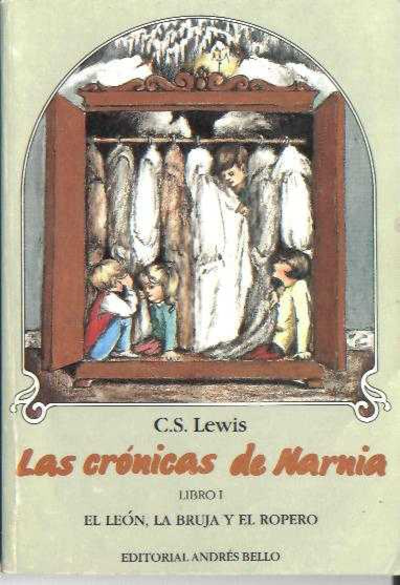

Descripción
"El león, la bruja y el ropero", de C.S. Lewis, sigue a los cuatro hermanos Pevensie (Peter, Susan, Edmund y Lucy) quienes, tras descubrir un armario mágico en una casa de campo durante la Segunda Guerra Mundial, viajan al mundo congelado de Narnia. Allí, ayudan al león Aslan a liberar la tierra de la Bruja Blanca, que mantiene un invierno eterno sin Navidad.”
Información General
- Género: Novela
- Año de Publicación: 1950
- País: Reino Unido
Personajes Principales
- Peter Pevensie
- Susan Pevensie
- Edmund Pevensie
- Lucy Pevensie
Más Información
Puedes leer más sobre este libro en Wikipedia